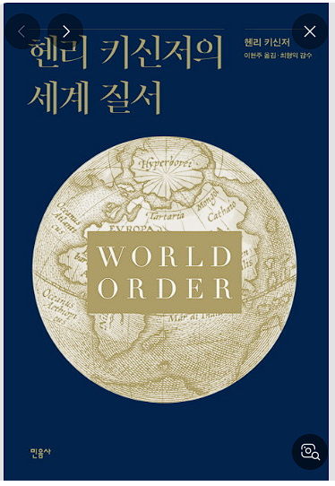
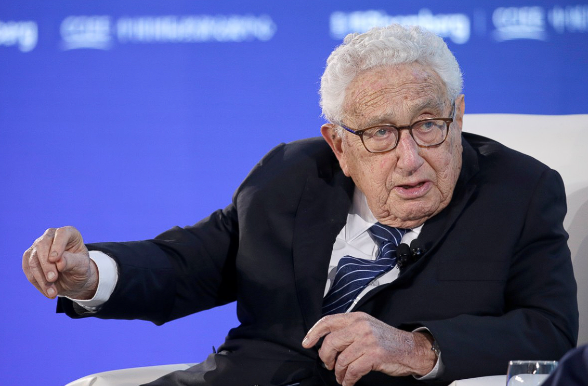

헨리 앨프리드 키신저는 1923년 바이마르 공화국에서 태어나서 나치독일을 겪고 미국으로
이주하여 미국에서 국무장관, 국가안보보좌관을 역임하였다. 한국의 김대중 납치사건 때
헨리 키신저의 도움으로 목숨을 건진 것으로 그와 개인적 친분을 가지고 있다.
이 책에서 유럽이 30년전쟁후 유럽국가간 베스트팔렌 조약을 맺고, 국가간 주권을 인정하고자
하였고, 이후 벌어진 1차,2차 세계대전을 통해 미국이 지정학적 잇점으로 세계의
강대국으로 올라서게 되었으며, 이후 세계질서에서 주도적인 역할을 해왔음을 알리고 있다
다만, 베스트팔렌 조약 자체가 유럽국가간의 약속이며 이에 동의한 적이 없는 중국, 소련,
중동지역들의 국가들은 이에 대해서 동의하지 않는 상황이며, 이에 대해 미국은 특별히
해결책은 없어 보인다. 세계역사에 대해 배경지식이 있다면 더욱 흥미있게 읽을 수 있는
책으로 생각된다.